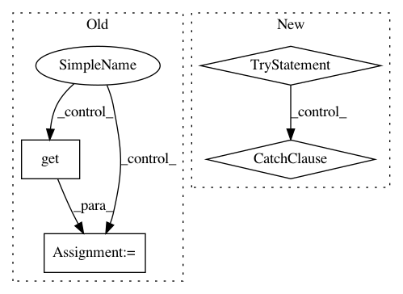

4cef1ee591648f289a4e6f00d70e03625e252594,python/ray/serve/router.py,Router,remove_worker,#Router#Any#Any#,248
Before Change
new_queue = asyncio.Queue()
while not old_queue.empty():
curr_tag = await old_queue.get()
if curr_tag != backend_replica_tag:
await new_queue.put(curr_tag)
self.worker_queues[backend_tag] = new_queue
After Change
async with self.flush_lock:
del self.replicas[backend_replica_tag]
try:
self.worker_queues[backend_tag].remove(backend_replica_tag)
except ValueError:
// Replica doesn"t exist in the idle worker queues.
// It"s ok because the worker might not have returned the
// result.
pass
async def set_traffic(self, endpoint, traffic_dict):
logger.debug("Setting traffic for endpoint %s to %s", endpoint,
traffic_dict)
async with self.flush_lock:
In pattern: SUPERPATTERN
Frequency: 3
Non-data size: 4
Instances
Project Name: ray-project/ray
Commit Name: 4cef1ee591648f289a4e6f00d70e03625e252594
Time: 2020-06-01
Author: xmo@berkeley.edu
File Name: python/ray/serve/router.py
Class Name: Router
Method Name: remove_worker
Project Name: AlexEMG/DeepLabCut
Commit Name: 390d6560c6873526218606c254627f52898c700d
Time: 2020-08-19
Author: 30733203+jeylau@users.noreply.github.com
File Name: deeplabcut/create_project/new.py
Class Name:
Method Name: create_new_project
Project Name: ray-project/ray
Commit Name: de46464aa3595c0fcb622ceaf2248eb9266e46e8
Time: 2020-08-19
Author: architkulkarni@users.noreply.github.com
File Name: python/ray/experimental/queue.py
Class Name: Queue
Method Name: get